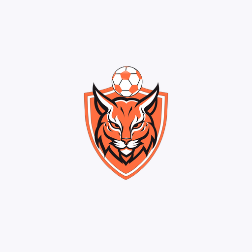

The beautiful game
Football Stories.
Always with you.
Live scores, football news, videos and your favourite teams in one app.
Get the app
Free web app • No app store required
Installation
Live footballScores and league tables.
Your favouritesFollow clubs and players.
News & videosFootball stories in one place.